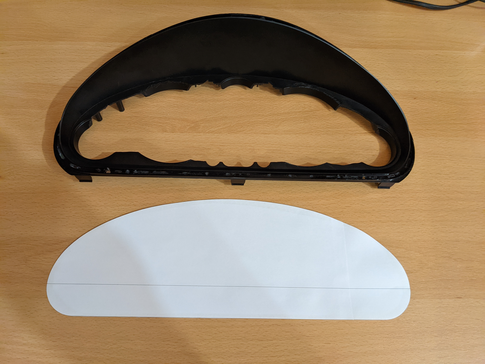
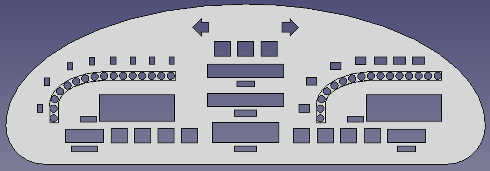
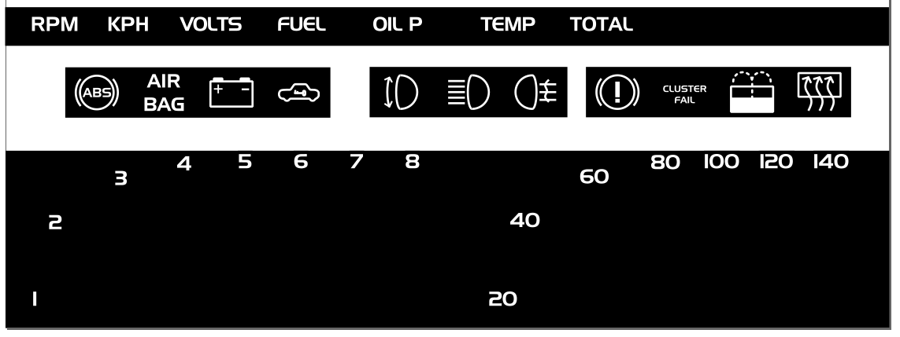

MX5 KITT: Instrument Cluster
Arguably, one of the most recognizable parts of KITT is the retro-futuristic dashboard.
As such, my MX5 KITT had to have one too! However, I shrunk the project to just the instrument cluster. This meant that getting it TÜV approved would be possible, and the amount of work would be manageable.
First order of business was to sketch out what I wanted to have. I eyeballed (pretty badly, admittedly) the shape of the cluster and started drawing:
Now that I knew what I wanted, it was time to order some parts. I bought the 7-segment displays, the bargraph displays and a bunch of LEDs:

I also bought a spare cluster off of eBay, which Idefix and I took apart. The most interesting bit here was the circuit board on the back, which was actually less of a board and more of a foil.
Idefix then measured the front plate of the cluster and cut out as much as possible on the inside: 
I then got to work on the CNC design (in FreeCAD) for the new faceplate. It took quite a few iterations until I was happy with the result, until Idefix brought in the idea of using two plates to glue on top of each other. This would allow the warning lights and displays to be set slightly (in the end, it ended up being 1mm) back, which would look very cool. The final design (with both plates on top of each other) was this: 
I also designed a bunch of icons and lettering in Inkscape: 
I’d been working on the electronics for a while in parallel. Most of it was wiring up displays to the driver chips, and those chips to the ESP32, my chosen microcontroller.


There were two big topics left: The power supply, and the inputs.
I had toyed with the idea of installing a speed sensor from an MX5 NB in place of the mechnical speedo cable in my NA.
However, I got lucky: The stock cluster we took apart included a rudimentary (but completely sufficient) speed sensor:

This means I get a square wave signal with 4 pulses per cable rotation.
The other inputs are all analog signals which are easy to read on a microcontroller with the help of some voltage dividers. The only exception here is the rev counter, which again comes in as a square wave.
Both the rev counter and the speedo have a function to convert from the time between the pulses to the relevant number - RPM and km/h.
The other (analog) inputs use value tables with linear interpolation in-between. Luckily, there were a few forum threads with the numbers I needed to build my tables.
For the warning (and information) lights I chose to go with LEDs, mainly because of heat concerns with bulbs (which turned out to be unnecessary). The LEDs are just connected to where the bulbs used to be, although I had to add some resistors because the LEDs drew too little current. Some lights rely on having bulbs though (presumably for resistance checks so the system can see if someone has taken the bulb out instead of fixing the problem) so I kept the bulbs here.
The power supply was the last problem: Cars are a very hostile environment for electronics, with high variations in voltages and lots of possible spikes that can just fry whatever you connected.
There are a few circuit designs available here, I chose to use this:
There were a few more bugs to iron out, but now the cluster is in one piece and looks great!